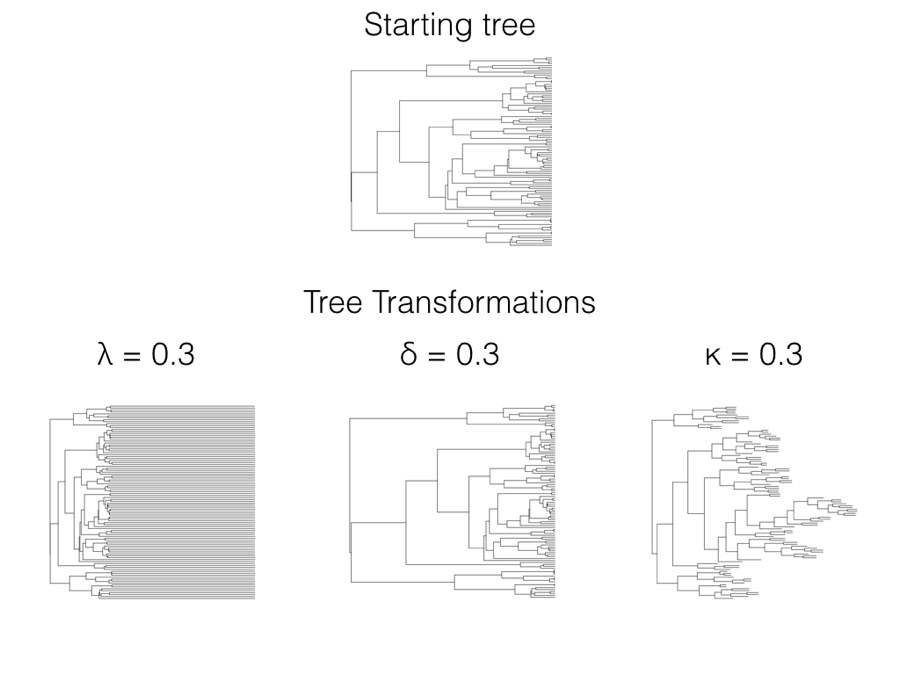
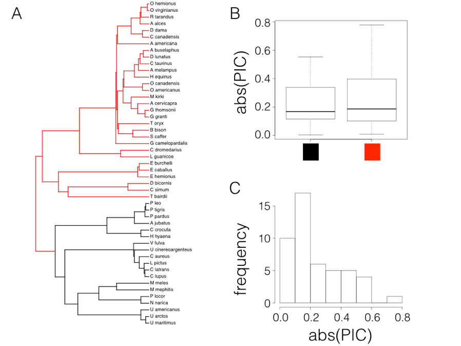
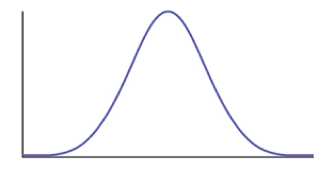
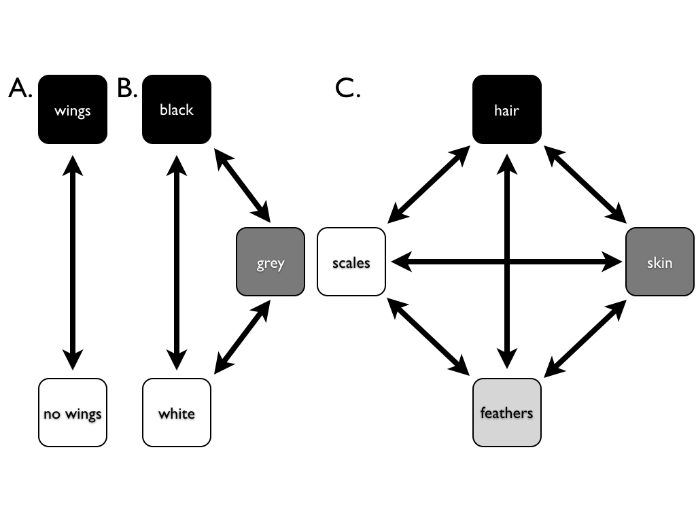
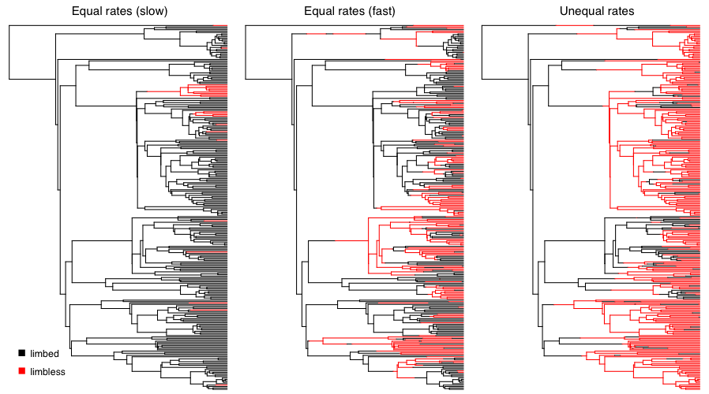
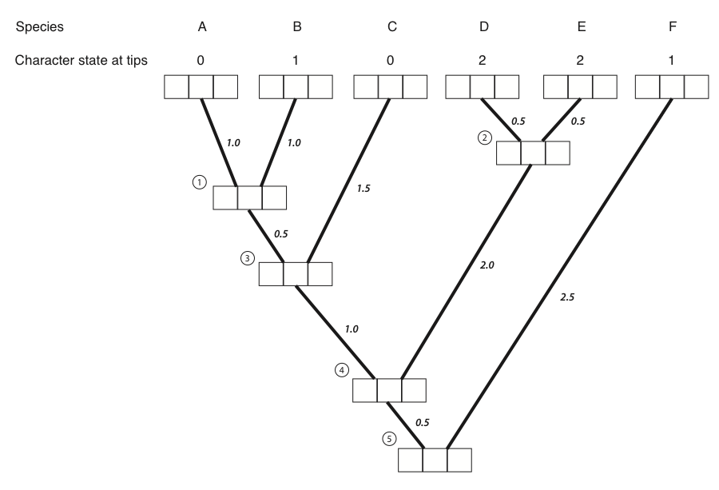
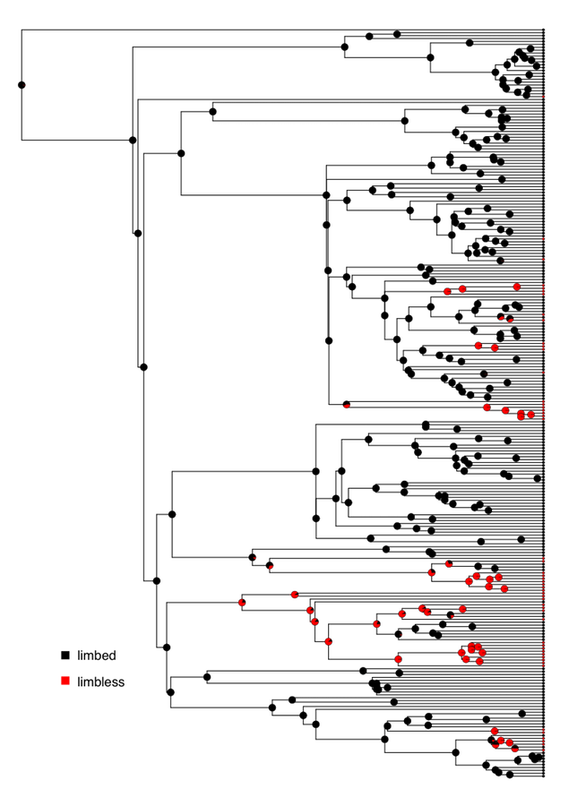

In the lab, fitContinuous compared BM, OU, EB and $\lambda$ by AIC. Why four models, and what does each one actually mean?

The same tree under three branch-length transformations. Harmon (2019) PCM, Fig 6.1 (CC-BY-4.0).
What this lecture is for
Brownian motion is the null. It says a trait wanders with no destination, at one constant rate, everywhere on the tree. Real traits often do something more interesting:
Constraint. A trait is held near an optimum and stops wandering: the Ornstein–Uhlenbeck model.
Bursts. A trait diversifies fast early then slows: the early-burst model.
Lost signal. Relatives resemble each other less than the tree predicts: Pagel's transformations.
Each is BM plus one extra parameter. Setting that parameter to its default value recovers BM exactly, so each is a testable departure from the null.
Three families of model
Reshape the tree. Pagel's $\lambda$, $\delta$, $\kappa$; multi-rate models.
Change the process. Ornstein–Uhlenbeck; early burst.
Discrete traits. The Mk model and stochastic mapping.
Choosing between them is a model-selection problem: fit each, then compare with AIC, exactly the aicw() step from the lab.
Every model here is compared against the null
Each model returns a log-likelihood and a parameter count $k$. From these, recall (lecture 11):
$$\mathrm{AIC} = 2k - 2\ln L, \qquad \mathrm{AIC_c} = \mathrm{AIC} + \frac{2k(k+1)}{n-k-1}$$
Because BM is nested inside most of these models (set $\alpha=0$, $r=0$, or $\lambda=1$), we can also use a likelihood-ratio test.
AIC turns the fits into weights: the relative probability that each model is the best in the set. That is what geiger::aicw() reports.
Keep this frame in mind: the rest of the lecture is a menu of alternatives, and the last ingredient is always "compared to what?"
Reshaping the tree: Pagel's transformations
Three transformations of $\mathbf{C}$
Pagel proposed three ways to stretch and squeeze the variance–covariance matrix $\mathbf{C}$ before fitting BM.
Each has one parameter that, set to 1, recovers the original BM tree:
$\lambda$ (lambda): phylogenetic signal,
$\delta$ (delta): the tempo of evolution through time,
$\kappa$ (kappa): gradual versus speciational change.
Fitting the parameter and comparing to $1$ tests whether the trait obeys BM on the true tree.
Each transformation at parameter value 0.3. Harmon (2019) PCM, Fig 6.1 (CC-BY-4.0).
Try it yourself: Pagel's $\lambda$ and phylogenetic signal
$\lambda$ multiplies the internal (shared) branches, leaving the tips at the present.
$\lambda=1$: full phylogenetic signal. The trait tracks the tree (plain BM).
$\lambda=0$: a star. Every species is independent; the tree predicts nothing.
$\lambda$ was one of the four models you fit in the lab. A fitted $\lambda<1$ says the trait carries less phylogenetic signal than Brownian motion on this tree would produce.
Phylogenetic signal, in one number
Phylogenetic signal is the tendency for related species to resemble one another. Pagel's $\lambda$ is one way to quantify it.
Interpreting a fitted $\lambda$:
$\lambda \approx 1$: relatives are as similar as BM on the tree predicts.
$\lambda \approx 0$: the trait is effectively independent of the phylogeny.
$\lambda > 1$ is occasionally seen and usually signals model misfit.
Blomberg's $K$ is a related statistic: $K>1$ means relatives are more similar than BM predicts (conserved); $K<1$ means less.
Low signal is itself informative: it suggests strong selection, measurement error, or a trait responding fast to the current environment, the very situation where ignoring phylogeny is least harmful (recall Felsenstein's caveat).
Pagel's $\delta$ and $\kappa$
$\delta$ (delta): tempo through time
Raises node heights to the power $\delta$, rescaling when change happens.
$\delta=1$: unchanged BM.
$\delta<1$: change concentrated early (deep branches do more work).
$\delta>1$: change concentrated late (recent branches do more).
$\kappa$ (kappa): gradual vs speciational
Raises each branch length to the power $\kappa$.
$\kappa=1$: standard BM (change $\propto$ time).
$\kappa=0$: all branches length 1; change depends only on the number of speciation events, not on time (punctuated evolution).
Compare the $\delta=0.3$ and $\kappa=0.3$ panels in the figure two slides back: $\delta$ moves the splits in time, while $\kappa$ pushes the model toward "change happens at speciation."
Different rates in different clades
BM assumes a single rate $\sigma^2$ across the whole tree. What if one clade evolves faster?
Three ways to test:
Contrast-based rate test: compare the spread of squared contrasts between clades.
ML + AIC: fit a model with a separate $\sigma^2$ per clade and compare to single-rate BM.
Bayesian MCMC: let every branch have its own rate; the posterior flags rate shifts.
Caveat: methods 1 and 2 need the clades to be specified in advance. Scanning every clade and keeping the most significant inflates false positives.

Rate test: carnivores (black) vs other mammals (red), Garland (1992) data. Harmon (2019) PCM, Fig 6.2 (CC-BY-4.0).
Constraint: the Ornstein–Uhlenbeck model
A rubber band toward an optimum
The Ornstein–Uhlenbeck (OU) model is BM plus a pull toward an optimum $\theta$:
$$dX = \underbrace{\alpha(\theta - X)\,dt}_{\text{pull to optimum}} + \underbrace{\sigma\,dW}_{\text{random walk}}$$
$\alpha$ is the strength of the pull. The further $X$ strays from $\theta$, the harder it is pulled back.
This is the model of stabilizing selection: a trait kept near an adaptive peak (right).
Special case: $\alpha=0$ removes the pull and OU collapses to plain BM. So OU nests BM.

A fitness landscape producing stabilizing selection: fitness peaks at the optimum trait value. Harmon (2019) PCM, Fig 6.3 (CC-BY-4.0).
Try it yourself: the OU pull
Lineages start away from the optimum $\theta$ (green line) and are pulled toward it as they wander.
Set $\alpha=0$ for pure BM (the spread keeps growing). Increase $\alpha$ and the variance reaches a ceiling $\sigma^2/2\alpha$: the past is forgotten.
What OU buys you
Bounded variance
Unlike BM, the variance does not grow forever; it settles at $\sigma^2/2\alpha$. Distantly related species are no more different than close ones.
A measurable memory
The phylogenetic half-life $\ln 2/\alpha$ says how fast ancestry is forgotten. Large $\alpha$ means the tree barely matters.
Handle with care
OU is easy to over-fit on small trees, and measurement error mimics a high $\alpha$. A favourable AIC is not proof of an optimum.
OU was the model most often favoured in the lab's finch-beak comparison: beak dimensions behave as if held near an adaptive optimum.
Multi-peak OU: many optima on one tree
Let different parts of the tree be pulled toward different optima $\theta_1,\theta_2,\dots$ This is the Hansen model.
Paint the branches with regimes; each regime has its own peak in trait space. Lineages sharing a regime are drawn to the same point.
This formalises Simpson's "adaptive zones": shifts between peaks are shifts between adaptive strategies.
When independent lineages are pulled to the same peak, the model captures convergence, exactly the test behind the Caribbean Anolis result from last lecture (Mahler et al. 2013).
Bursts: adaptive radiation
The early-burst model
An opportunity opens (a new island, a key innovation, a mass extinction). Lineages diversify fast to fill empty niches, then slow as niches fill.
The rate decays through time:
$$\sigma^2(t) = \sigma^2_0\, e^{rt}, \quad r<0$$
Most disparity accumulates early; the tips are relatively similar.
$r=0$ is constant-rate BM. As $r$ becomes more negative, the rate collapses early and the accumulated disparity flattens off: the signature of an early burst.
Peak shifts and punctuated change
Punctuated models picture long stasis broken by brief bursts of change, often at speciation or at a shift in selective regime.
The bursts can be modelled as occurring:
at random points,
at fixed intervals, or
linked to changes in another trait on the tree.
Like the multi-rate methods, these identify parts of the tree evolving differently from the rest.
Linking a peak shift in one trait to changes in another is powerful but risky: with enough traits, some apparent association is almost guaranteed by chance.
Choosing among the models
The lab's fitContinuous + aicw step, formalised
Try it yourself: AIC weights
Four models fit to one trait. Set each log-likelihood; weights update live.
$w_i = \dfrac{e^{-\Delta_i/2}}{\sum_j e^{-\Delta_j/2}}$ where $\Delta_i = \mathrm{AIC}_i - \mathrm{AIC}_{\min}$. A higher likelihood helps, but the extra parameter in OU/EB/$\lambda$ must improve the fit enough to offset its AIC penalty.
Model selection: cautions
The best model in a set is not necessarily a good model. AIC ranks the candidates you supplied; it cannot point to a model you did not fit.
OU and early burst are easily over-fit on small trees, and measurement error can masquerade as OU. Treat a modest AIC advantage with scepticism.
Check model adequacy, not just relative fit: simulate data under the winning model and ask whether it reproduces features of the real data.
Report the weights, not just the winner. Two models within a couple of AIC units are effectively tied; choosing one and ignoring the other overstates certainty.
Discrete characters
When the trait is a category, not a number
Many traits are discrete: present/absent, 2/3/4 colour morphs, diet category, limbed/limbless.
These have no meaningful average, so BM and contrasts do not apply.
Instead, model evolution as jumps between states along the branches, using a continuous-time Markov chain.
This is the same modelling approach used for DNA substitution earlier in the course, now applied to phenotypes.

Discrete characters with $k=2$, $3$, and $4$ states. Harmon (2019) PCM, Fig 7.3 (CC-BY-4.0).
The Mk model
The Mk model (Lewis 2001) describes a character with $k$ states changing at constant rates, a direct generalisation of the Jukes–Cantor model for DNA.
Rates live in a transition matrix $\mathbf{Q}$. For $k=2$:
$$\mathbf{Q} = \begin{pmatrix} -q_{01} & q_{01} \\ q_{10} & -q_{10} \end{pmatrix}$$
The two flavours you fit in the lab:
ER (equal rates): $q_{01}=q_{10}$, one rate.
ARD (all rates different): each transition its own rate.
More states or asymmetric rates simply add parameters to $\mathbf{Q}$; compare them with AIC, as before.

Mk simulations of limbed (black) vs limbless (red) on a squamate tree: slow, fast, and asymmetric rates. Harmon (2019) PCM, Fig 7.4 (CC-BY-4.0).
Try it yourself: simulate Mk on a tree
A binary trait (state 0 / state 1) evolves down the branches. Each branch is coloured by its current state.
Raise $q$ and transitions pile up; the same state can be reached independently on different branches (homoplasy). With ARD, state 1 tends to revert to state 0.
Computing the likelihood: pruning
A single simulation is easy; the likelihood sums over all possible histories, which is astronomically many.
Felsenstein's pruning algorithm makes it tractable: work from the tips to the root, storing at each node the probability of the data below it, for each possible state.
At each node, combine the two daughter probabilities using $\mathbf{Q}$ and the branch lengths; recurse down to the root.
This is the same algorithm used for DNA substitution models earlier in the course; only the states and $\mathbf{Q}$ differ.

Each node stores per-state probabilities; pruning fills them from tips to root. Harmon (2019) PCM, Fig 8.4 (CC-BY-4.0).
A real example: the evolution of limblessness
Squamate reptiles (lizards and snakes) have lost their limbs many times independently: snakes, but also numerous lizard lineages.
Fitting an Mk model and reconstructing ancestral states shows limblessness (red) scattered across the tree, not confined to one clade.
Each red patch on a black background is an independent transition: a striking case of convergent evolution in a discrete trait.
The same fit also estimates whether the limbed→limbless transition is effectively irreversible: regaining limbs is rare or impossible.

Reconstructed limbed (black) vs limbless (red) across squamates (data: Bergmann et al. 2012). Harmon (2019) PCM, Fig 8.2 (CC-BY-4.0).
Stochastic character mapping
Point estimates of ancestral states hide their uncertainty. Stochastic character mapping (SIMMAP) samples entire histories consistent with the tips and the fitted $\mathbf{Q}$.
In the lab you ran make.simmap(..., nsim = 100): 100 sampled histories, each a complete painting of states along every branch.
Summarising the 100 maps gives, at every node, the posterior probability of each state, shown as pie charts on the tree.
Why it matters: a single reconstruction can look confident even when the data barely constrain a node. The spread across sampled maps is the honest measure of what we know.
The same idea underlies counting how many times a trait was gained or lost: average those counts over the sampled histories rather than trusting one reconstruction.
State-dependent diversification (SSE)
Does a trait change the rate of speciation or extinction? SSE models join an Mk model to a birth–death model so the diversification rate can depend on the state.
An alphabet of variants:
BiSSE: binary-state speciation and extinction,
HiSSE: adds a hidden state to absorb unmeasured rate variation,
MuSSE: multiple states.
Use when the question is explicitly "does having this trait make a lineage diversify faster?"
Caution: SSE models are prone to false positives. Any clade that happens to be both species-rich and trait-biased can trigger a spurious signal. HiSSE and careful null models exist precisely because of this.
Summary: a menu of models beyond BM
Model
What it captures
Key parameter(s)
Recovers BM when
Pagel's $\lambda$
Phylogenetic signal
$\lambda \in [0,1]$
$\lambda=1$
Pagel's $\delta$
Tempo through time
$\delta$ (node-height power)
$\delta=1$
Pagel's $\kappa$
Gradual vs speciational
$\kappa$ (branch-length power)
$\kappa=1$
Multi-rate BM
Rate varies across clades
$\sigma^2_1,\sigma^2_2,\dots$
all rates equal
OU
Stabilizing selection
$\alpha$ (pull), $\theta$ (optimum)
$\alpha=0$
Early burst
Adaptive radiation
$r$ (rate decay)
$r=0$
Mk
Discrete-character evolution
transition rate(s) in $\mathbf{Q}$
(continuous analogue)
SSE (BiSSE, HiSSE...)
Trait-dependent diversification
state-specific $\lambda,\mu$
(birth–death analogue)
Each continuous model is BM plus one parameter. Fit them, read off log-likelihoods, and let AIC weights decide, exactly the lab workflow.
Discussion
If you do not know in advance which clade evolves at a different rate, what are the risks of testing every clade and keeping the most significant?
A fitted OU model beats BM by a few AIC units on a tree of 20 species. What would you check before believing the trait is under stabilizing selection?
For what reasons might Pagel's $\lambda$, $\delta$ and $\kappa$ be less popular today than process-based models like OU?
Under the early-burst model, why do we expect the rate to slow over time, and what would the tips look like if it did?
Stochastic mapping returns 100 different histories for the same data. Why is that spread more useful than a single "best" reconstruction?